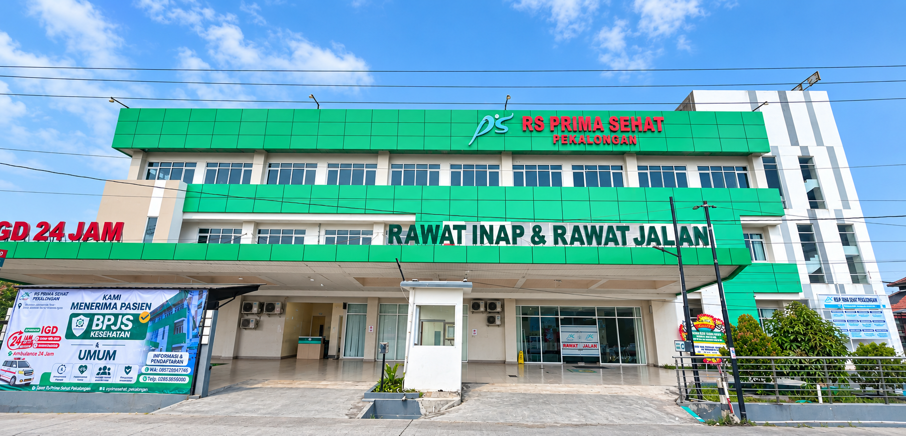

Profil RS Prima Sehat Pekalongan
Rumah Sakit Prima Sehat merupakan rumah sakit yang memberikan pelayanan kesehatan kepada masyarakat dengan mengutamakan keselamatan dan kenyamanan pasien.
RS Prima Sehat Pekalongan berkomitmen memberikan pelayanan kesehatan yang profesional, aman, cepat, dan terpercaya dengan mengutamakan kebutuhan serta kepuasan pasien.
Jl. Raya Pantura Rembun No. 1, Kecamatan Siwalan, Kabupaten Pekalongan
Sejarah
Rumah Sakit Prima Sehat hadir sebagai bagian dari upaya memberikan akses pelayanan kesehatan yang mudah dan berkualitas bagi masyarakat Kabupaten Pekalongan dan wilayah Pantura Jawa Tengah.
Dalam perkembangannya, RS Prima Sehat terus berupaya meningkatkan kualitas pelayanan, sumber daya manusia, sarana dan prasarana, serta sistem manajemen rumah sakit untuk memenuhi kebutuhan kesehatan masyarakat.
Visi
Menjadi rumah sakit pilihan masyarakat Pantura Jawa Tengah
Misi
- Meningkatkan Pelayanan Kesehatan yang Terbaik
- Mengutamakan Mutu dan Keselamatan pasien
- Mengembangkan Kualitas Sumber Daya Manusia
- Mengembangkan Penyediaan Sarana dan Prasarana Rumah Sakit
- Mengembangkan Sistem Manajemen Berbasis Ilmu dan Teknologi
Nilai-Nilai
Dalam memberikan pelayanan kesehatan, RS Prima Sehat menjunjung tinggi nilai-nilai yang menjadi dasar dalam memberikan pelayanan kepada pasien dan masyarakat.
Komitmen Kami
RS Prima Sehat Pekalongan berkomitmen untuk terus memberikan pelayanan kesehatan yang aman, profesional, manusiawi, dan berorientasi pada kebutuhan pasien.
Kami terus melakukan peningkatan mutu pelayanan, pengembangan sumber daya manusia, serta pengembangan sarana dan prasarana agar dapat memberikan pengalaman pelayanan kesehatan yang semakin baik bagi pasien, keluarga, dan masyarakat.